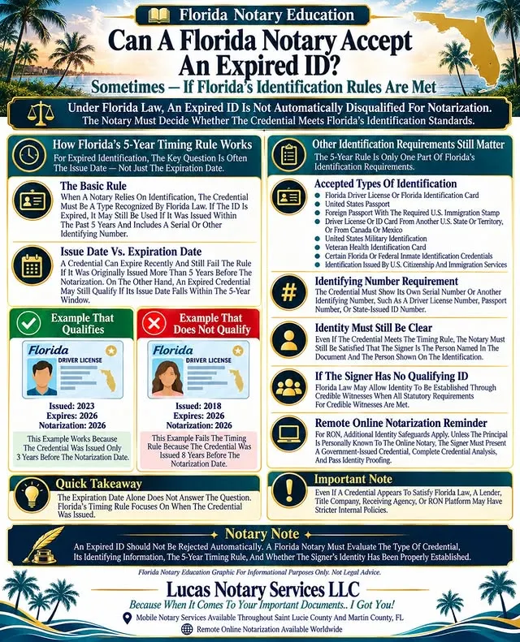
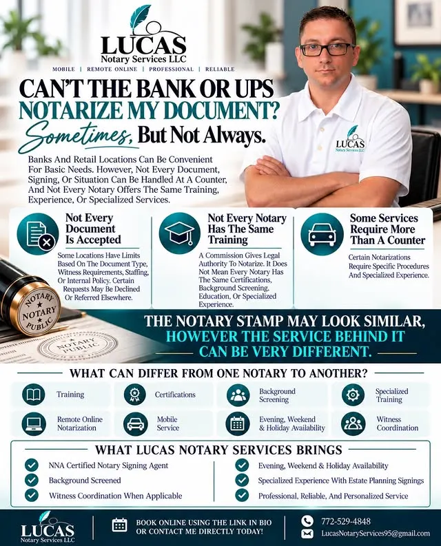
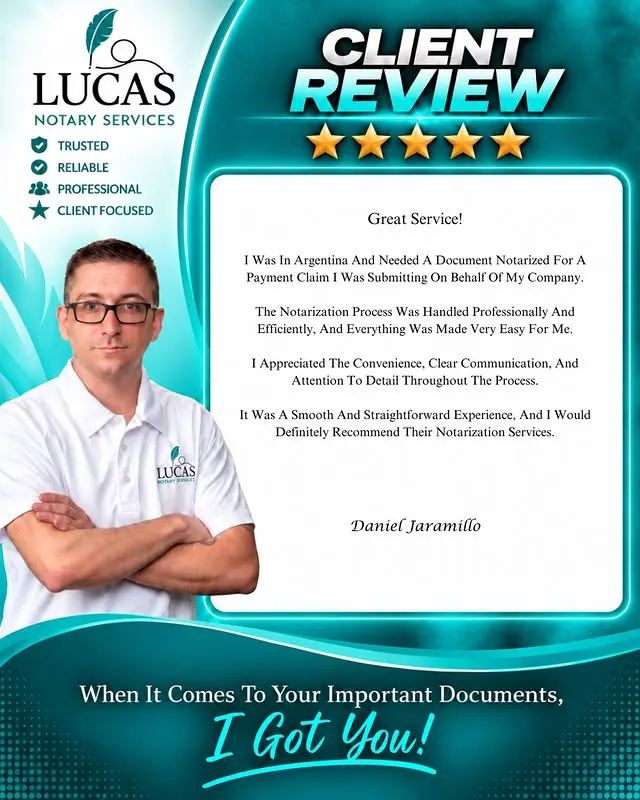

What can be notarized
From everyday paperwork to estate and real-estate signings — in person across St. Lucie and Martin County, or online from wherever you are.
Mobile notary
A notary who comes to you — home, office, hospital, or closing table — across St. Lucie & Martin County, Florida.
Remote online notarization
A secure video session for signers anywhere in the world — no waiting until you're back from your travels.
Real estate & loan signings
Closings, refinances, and loan packages handled with the pace and accuracy title companies expect.
Estate planning documents
Estate-plan and power-of-attorney documents, notarized carefully and without rushing the moment.
Affidavits & general notarizations
Everyday documents, affidavits, and witness coordination — the paperwork that can't wait.
For people & professionals
Individuals and families, plus attorneys, title companies, lenders, realtors, businesses, and contractors.
How it works
Call, text, or book online and say what needs signing and where you are.
Darrall comes to you — or you meet over a secure remote online session.
Identity verified, signatures witnessed, and your document properly notarized.
Good to know before you book
Straight from the business's own posts — the answers people ask about most.



Book an appointment
Serving St. Lucie & Martin County, Florida in person — and remote online notarization worldwide. Book online or contact Darrall today.